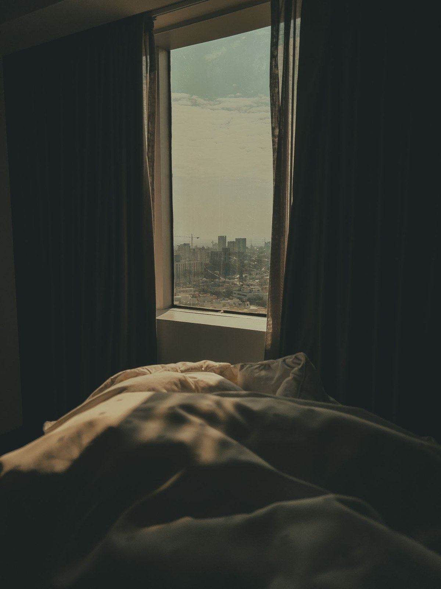

Starter plan
Sleep Tips for Night Shift Workers: How to Sleep Better

This guide contains affiliate links. If you buy through them, Holistic Life may earn a small commission at no extra cost to you. How we use affiliate links.
Quick answer
- Make the bedroom as dark as you can: blackout curtains, covered edges, a sleep mask and a dim red night light.
- Turn screens off before sleep. If you must use one, switch to a red or night light mode and keep it dim.
- On days off, if you want to keep your night schedule, bright light at home in the evening may help you stay awake.
- Keep a short, repeatable wind-down, and ask a clinician if sleep is still a problem.
Sleeping in the daytime is hard. Your body expects to be awake while the sun is up, and the world outside is loud and bright. These sleep tips for night shift workers draw on CDC NIOSH guidance for nurses: a dark room, less screen light, bright light at home when you want to stay awake, and a routine you can repeat. This page is for nurses and other shift workers, and it leaves out supplements and sleep aids.
Why daytime sleep is harder
Your body clock follows light. Sun and bright rooms tell your brain it is time to be awake, so sleep after a night shift can be shorter and lighter than sleep at night. Noise, phones and family life during the day add to it. You cannot change the sun, but you can change what reaches your eyes and ears. For the food side of the same problem, see our meal prep ideas for 12-hour shifts.
Make the bedroom dark
This is the biggest change for most people. Aim for a room where you cannot see your hand in front of your face.
- Hang blackout or room-darkening curtains. Choose heavy, lined fabric and hang it wider than the window so it covers the sides.
- Cover the edges. Light leaks around the frame and above the rod. Tape, a valance or a second curtain panel can close the gaps.
- Block light under the door. A draft stopper or a rolled towel does the job.
- Cover small lights. Tape over charger and standby lights, or turn the devices around.
- Use a sleep mask. It catches any light that still gets through.
- Keep a dim red night light. Use it for bathroom trips so you do not switch on a bright light and wake yourself up. Keep the path to the bathroom clear, too.
Keep it quiet and cool
A cool room may help many people sleep. Put your phone on do not disturb, with calls from family or your unit as exceptions you choose. Earplugs can soften traffic and deliveries. Ask the people you live with to keep the house quiet during your sleep time, and put a sign on the door if deliveries are an issue.
Screens: turn them off or use red light mode
The best option is no screen in the last stretch before sleep. Bright light from phones and tablets can make it harder to wind down, and an active screen keeps your brain busy. If you do use a screen:
- Turn on a red or night light mode, and lower the brightness.
- Avoid news, work email and social media that gets you worked up. Stressful content can keep you awake even on a dim screen.
- Set a time to stop, and put the phone out of reach.
Stay on nights on your days off
Plenty of night workers keep their night schedule on days off, so they are not flipping back and forth between nights and days. The hard part is staying awake through the small hours at home, where the lights are low and the couch is close. Light is one tool for that, because bright light tells your body it is time to be awake.
- Keep the lights bright in the evening and early part of your night at home.
- A light therapy lamp, also sold as a SAD lamp or a bright light lamp, is one option. Put it where you will be sitting, and follow the maker's directions for distance and timing.
- Plan the rest of the night too: a meal, a walk, a call, a project. Light helps, but you still need something to do.
- Dim the lights and switch to the wind-down routine below a few hours before you plan to sleep, so the lamp does not push your bedtime later.
If you have an eye condition or take medicine that makes you sensitive to light, ask a clinician before you use a light therapy lamp.
Around your shift
- Go straight to bed when you can. Skip errands and long scrolling on the way home.
- Dark sunglasses after a night shift can cut morning light, but they may also make a sleepy driver sleepier. NIOSH says the safest approach is to wear them only when someone else is driving you home.
- If you are very sleepy, do not drive. Ask for a ride, take a break or sleep before you leave if your workplace allows it.
A wind-down routine
A routine that repeats every day tells your body that sleep is coming. Here is one to adapt:
- Silence phone alerts and put the phone out of reach.
- Switch off or dim screens, or use a red light mode.
- Close the curtains and use a red night light for the last few tasks.
- Eat a small, light snack if you are hungry, and avoid a heavy or spicy meal.
- Put on your mask and earplugs, and go to bed at the same time each day.
Gear that makes it easier
You can do most of this with what you have at home. If a few items would make it easier, these are the ones worth a look.
Blackout curtains
Daylight is the main thing that makes sleep after a night shift hard. Heavy curtains turn a bright bedroom into a dark one.
What to look for
- Thick, lined fabric, sold as blackout or total darkness
- Wide enough to hang past the window frame on both sides
- A rod or track that holds the weight
See blackout curtains on Amazon (paid link)
Door draft stopper
Light under the bedroom door is easy to miss. A stopper blocks it and cuts hallway noise too.
What to look for
- Long enough to cover the full width of your door
- A snug fit with no gap at either end
- A fabric that stays put on the floor
See door draft stoppers on Amazon (paid link)
Contoured sleep mask
A mask is a backup for any light the room still lets in, and it travels well for sleeping away from home.
What to look for
- A shape that sits off your eyes, so nothing presses on them
- A soft, adjustable strap
- Fabric you can wash
See sleep masks on Amazon (paid link)
Red night light
A dim red light lets you find the bathroom or check on the kids without switching on a bright overhead.
What to look for
- A true red or amber glow, not white or blue
- Plug in or battery, with low brightness
- A sensor that turns it on only when it is dark, if you want one
See red night lights on Amazon (paid link)
Soft foam earplugs
Daytime has traffic, deliveries and doorbells. Earplugs take the edge off the noise.
What to look for
- Soft foam that is comfortable for side sleeping
- A pack with many pairs, since they wear out
- A size that fits your ear
See earplugs on Amazon (paid link)
Light therapy lamp
A bright lamp, also sold as a SAD lamp or bright light lamp, gives you strong light at home on days off, when you want to stay awake at night and keep your night schedule.
What to look for
- A description that states its brightness in lux
- A stand or angle that suits your desk
- A timer or simple controls
See light therapy lamps on Amazon (paid link)
When sleep still is not working
Tips help, but they do not fix everything. If you are always exhausted, snore loudly, wake up gasping or feel low most days, talk to a clinician. This page is general information and not medical advice. For a gift idea for the nurse in your life, see our gifts for nurses.
Frequently asked questions
Is it okay to look at my phone before sleep after a night shift?
It is better to put it away. If you need it, use a red or night light mode and keep the brightness low. Light is only part of it, since stressful messages and news can keep you awake too.
Do I need a light therapy lamp?
No. It is one option for people who want to stay awake at night on their days off and keep a night schedule. If you have an eye condition, or you take medicine that affects light sensitivity, ask a clinician before you use one, and follow the lamp maker's directions on timing and distance.
Sources
- NIOSH (CDC): Training for Nurses on Shift Work and Long Work Hours, Create a Good Sleep Environment
- NIOSH (CDC): Training for Nurses on Shift Work and Long Work Hours, Improve Sleep by Avoiding Light
- NIOSH (CDC): Training for Nurses on Shift Work and Long Work Hours, Coping with the Night and Evening Shifts: Light
- NIOSH (CDC): Training for Nurses on Shift Work and Long Work Hours, Coping with the Night and Evening Shifts: Sleep
- NIOSH (CDC): Training for Nurses on Shift Work and Long Work Hours, Action Steps and Final Comments: Education
Save this guide for later
Tap a pin to save it to your Pinterest boards.